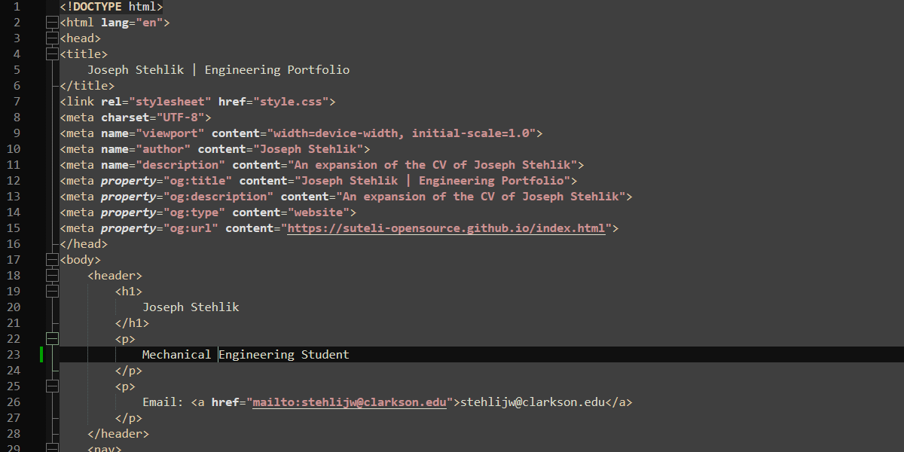
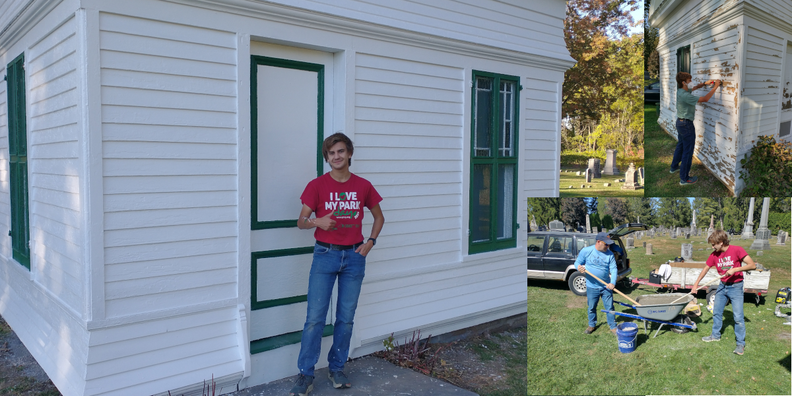

This Website!
Web design is fun. I started learning basic HTML around age 15, but never could figure out what to do with my passion. Eventually, I learned enough HTML & CSS to make things look good. Then, I started college. I was up early in the morning waiting for freshman orientation activities to start when an idea struck me; "What if I make my resume a site?" I did a little asking around and learned that it was a not uncommon to have a resume site along with the paper one would hand out. I started working and eventually got a good looking prototype within a week and started to fill in content while making more refinements. I am proud of this site so far, and will continue to change it as needed. It has been a great venture into web design, and has taught me about front-end development.

Eagle Scout Project
Every scout on the trail to Eagle has to lead a service project. When I had to make the choice of my project, I decided to beautify one of the local cemeteries by restoring a maintenance shed. Doing this project took significant work, requiring the sanding and painting of the shed, concrete work, a beehive removal, and much more. Overall, it took 200 manhours of work and was valued at $2200. I learned a lot about leadership and what it means to do a good job through this project, proving the experience valuable.
